我们在做较大数字的加法时，都会依赖数字内包含的位值信息。我们知道1 234表示的是一千二百三十四。数字中的每个位置都对应一个值。从右边开始数，它们（通常称为数位）分别是个位、十位、百位、千位等。每向左移动一位，数值就会变为原来的10倍。因此，数字1 234的个位是4（代表4），十位是3（代表30），百位是2（代表200），千位是1（代表1 000）。我可以把1 234写成：
1 234=4+30+200+1 000
数学老师把这样的式子叫作展开式，这对理解算术题是非常有帮助的。想象一下如何计算1 234与5 678的和。我可以借助展开式来计算：
1 234=4+30+200+1 000
5 678=8+70+600+5 000
然后，我可以很容易地将相应的值相加：
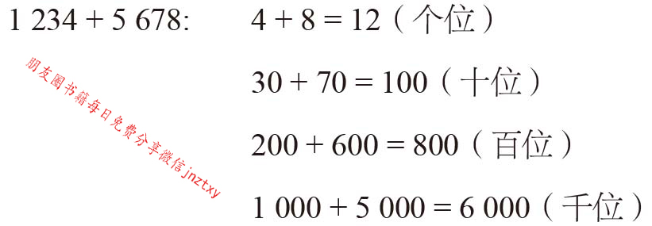
我们可以得出：1 234+5 678=12+100+800+6 000=6 912。
然而，我们在学校学到的方法充其量只是这一计算过程的简单记录。从右到左，将每一列相应的数值求和：
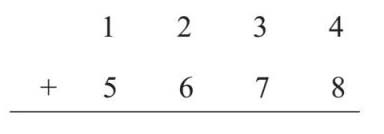
第一步先计算4+8=12。因为一个数位中写不下12，所以把2留在个位，向十位进1，再进行下一步计算：
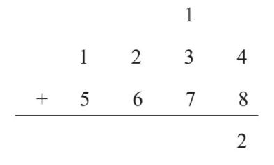
理论上讲，下一数位表示的含义是10+30+70=110。但是，我们也可以直接计算一共有多少个10：1+3+7=11。这样一来，数字也超了，所以我们需要向下一位再进1，从而进行下一轮运算：
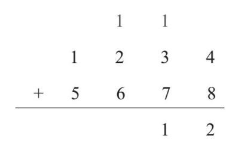
100+200+600=900：
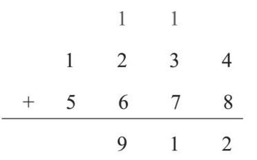
最后，1 000+5 000=6 000：
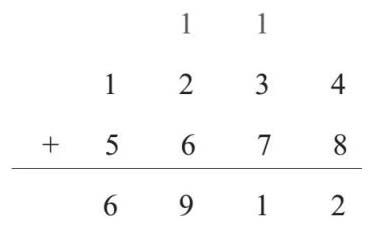
乘法是重复相加的一种快捷算法。12×17表示的是12个17。我可以把12个17相加或者17个12相加，来算出答案。但是如果你已掌握了乘法表的话，乘法就要快得多。
想象一下，我有很多棋子。我可以将棋子排列成每行17个、共12行，来解决12×17的问题：
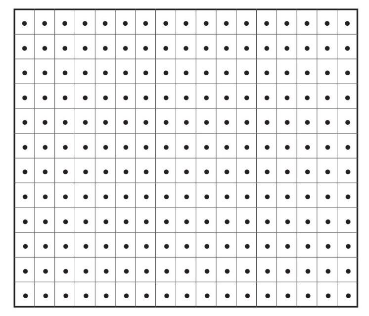
但是，如果我把12分解为10+2，把17分解为10+7，我就可以分组计算：
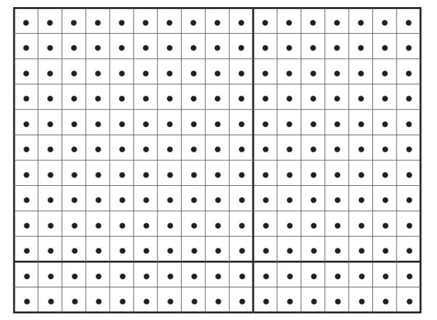
由于我已经掌握了乘法表，所以我可以计算出每部分有多少个棋子。
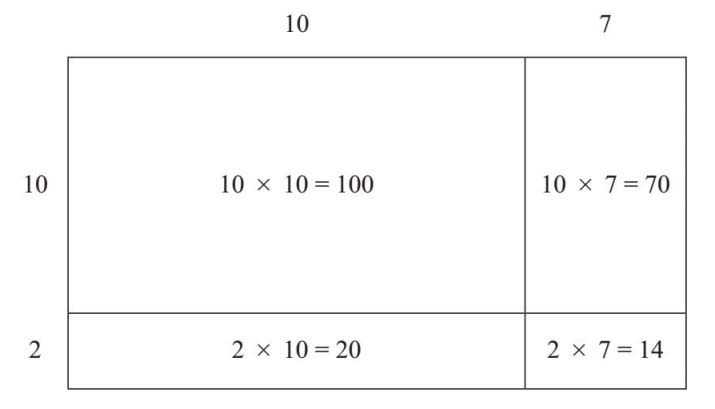
所以，12×17=100+70+20+14=204。
这种方法（至少需要204个棋子）被称为网格法。如果要计算293×157，我们可以用一种更先进的方法：
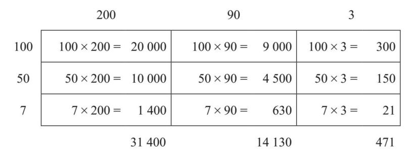
你可能会问，如果我们要计算的数超出了乘法表中的数字，应如何在脑中进行计算呢？这里介绍一个小技巧。当计算一个整数乘以10时，我会直接在该数的尾部加一个0。对于100×200，我会把100写成1×10×10，200写成2×10×10。如果我把它们放在一起，就有下面的式子：
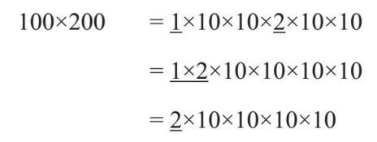
值得注意的是，我可以在两个方向上拓展数位。对于个位右边的数位，相邻的两位相差10倍，个位后分别是十分位、百分位、千分位等。中间可以用小数点表示分开。也就是说，我可以照上面的规则做小数的加法，例如45.3 +27.15：
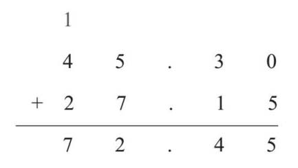
请注意，我在45.3结尾处加了0，以便让数位匹配，使计算更清晰（对于减法尤其重要）。我之所以这样处理，是因为45.3等于45.30：十分之三加上百分之零仍然是十分之三。正因如此，数学家把45.30称为四十五点三零，而不是四十五点三十。
记住，每乘一次10就表示在2之后加一个0，于是可以得到100×200=20 000。但我不会每次计算时都这样处理。我只是把前面的数字相乘，然后在右边加上相应数量个0。因此，对于50×200，我的思维过程是5×2=10，然后在右面加上三个0。因此，50×200=10 000。回答正确。
回到前面的计算中，可以看到我已经完成了每一列的计算。
我的最终答案是31 400+14 130+471，再做一次求和就大功告成了：
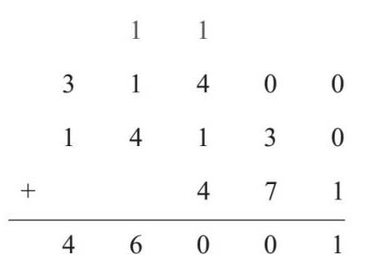
最终答案：293×157=46 001。
还可以运用其他方法，包括长乘法，但你只需要掌握一种运算方法即可。
下面让我们讨论一下加法和乘法的好朋友——减法和除法。
约翰·纳皮尔（1550—1617）是苏格兰数学家、天文学家和炼金术士，他发明了一套做乘法运算的小棒，称为纳皮尔筹。这种算法把每个倍数的运算表刻到一根木条上，例如，用于3倍运算的木条如左下图所示：
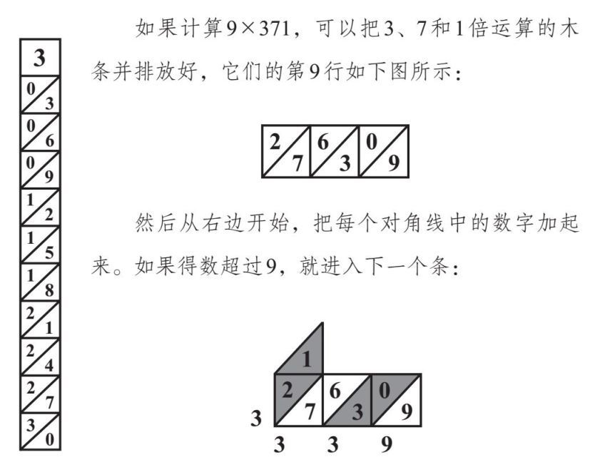
因此，9×371=3 339。
据传，纳皮尔曾施展巫术。他有一只黑色的公鸡，他每隔一段时间会命令仆人们独自进入一个房间，抚摸那只公鸡，说公鸡会感受到仆人是否诚实。实际上，纳皮尔事先把烟灰涂在了公鸡的羽毛上。任何有愧疚感的人都不会抚摸公鸡，于是他们的手上就没有沾上烟灰，狡猾的纳皮尔就会发现他们有罪。